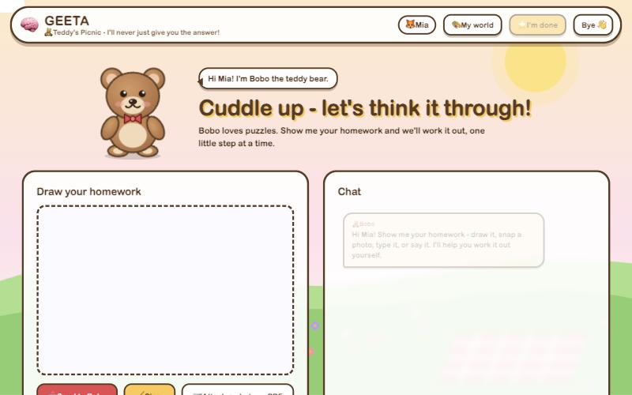
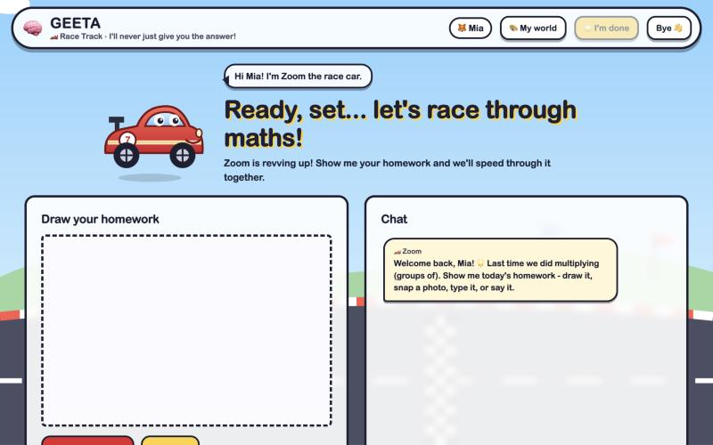
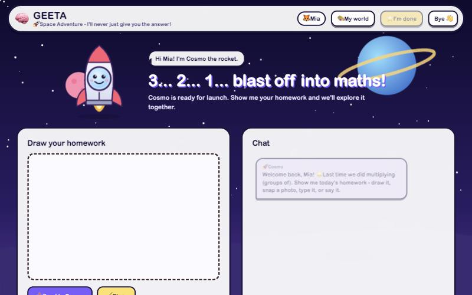
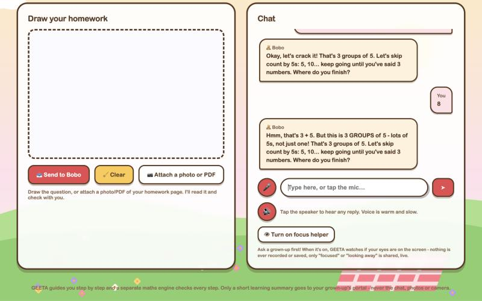

GEETA: a maths buddy that never gives the answer
An AI tutor for children in Years 1-3. A child draws, types, says or photographs a homework question, and a friendly buddy (a teddy, a race car, a rocket...) guides them to work it out themselves, one small hint at a time. The AI model runs entirely on one computer, and Python code checks every number before a child sees it.

Pick a world, meet a buddy
Children choose a world: teddy, car, space, dinosaur, unicorn or ocean. Each has its own buddy, colours and voice. They sign in by tapping their picture and typing a 4-digit secret number, only on a device a parent has switched on.



It finds the mistake, not just "wrong"
"3 bags with 5 apples in each". The child answers 8. GEETA works out why: that's 3 + 5, not 3 groups of 5. So it gives a skip-counting hint aimed at that slip, and still doesn't say 15.
Hints get stronger step by step: a nudge, then a worked example with different numbers (never the answer), then breaking the problem into smaller steps.
The AI reads. Python does the maths.
Early testing showed that model-written hints were sometimes wrong. A small model's arithmetic isn't safe to show a six-year-old, so the system is built to make wrong maths structurally impossible on the common question types.
A 4B model, fine-tuned and local
Qwen3.5-4B, LoRA-tuned on tutoring dialogues and quantised to GGUF (Q4_K_M) with a vision projector, served by llama.cpp on a MacBook. It reads handwriting and photos: 99.3% character accuracy on handwriting.
Deterministic Python tutoring
About 30 Year 1-3 problem types (word problems, place value, rounding, money, time, fractions, measurement, patterns...) are parsed and solved in Python. Python writes the hints and decides right or wrong.
Whole pages, one question at a time
A photographed worksheet is split into its numbered questions and sub-parts (26a, 26b...). The child picks one by voice or text, and GEETA tracks which questions are still unfinished.
Gated fallback + leak guard
Anything Python can't read falls back to the model. Its reply must pass an independent verifier and a checker that blocks false arithmetic, praise of wrong answers and invented numbers. A leak guard checks every reply for the answer.
Portals for kids, parents and staff
FastAPI web app with separate sign-ins for children, parents, tutors and admins, progress reports per child, and a parent PDF emailed every night at 10:30 PM Adelaide time.
Learning summaries only
No chats, photos or camera images are ever stored, only skills practised and scores. argon2 passwords, 2-step sign-in, lock-outs, CSRF and CSP. An in-house attack suite of 78 attacks: all blocked.
Results
Success criteria were pre-registered (SHA-256 frozen) before the final evaluation and have not been changed.
| Check | Target | Measured | |
|---|---|---|---|
| Wrong answers delivered (249 held-out problems) | 0 | 0 | PASS |
| In-scope accuracy (249 held-out problems) | ≥ 90% | 94.0% | PASS |
| Answers leaked (36 adversarial probes) | 0 | 0 | PASS |
| Handwriting OCR character accuracy | ≥ 85% | 99.3% | PASS |
| Overall pre-registered scorecard | ≥ 82 | 96.1 | PASS |
| Scripted kid conversations: wrong or confusing replies (630 turns, 3 test sets) | 0 | 0 | PASS |
| Automated sweep: answer given away (16,555 questions) | 0 | 0 | PASS |
| Security attack suite / feature suite | all | 78/78 · 63/63 | PASS |
Next step: a small feasibility pilot with two families, which will start only after ethics (HREC) approval. Results are from the system's own test sets; they describe the software, not learning gains.
Want to see it?
GEETA runs on my own machine for privacy, so the public link changes. Email me for a live walkthrough. The source code is in a private repository and is available to reviewers on request.